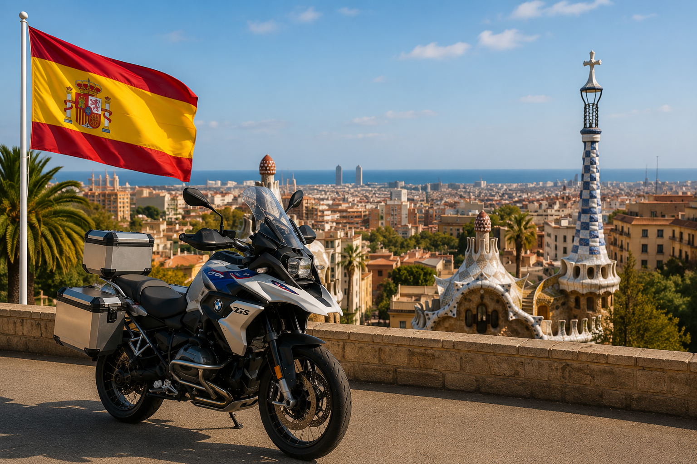

Amplia selección en el Reino Unido
Descubra en una sola plataforma motos ofrecidas por profesionales y particulares británicos.
Tanto si busca una BMW, Honda, Yamaha, Kawasaki, KTM, Ducati, Triumph o Suzuki, AnyBike puede encontrar la moto adecuada en el Reino Unido y coordinar su entrega a su transportista para España.

AnyBike conecta a compradores en España con motos ofrecidas por profesionales y vendedores particulares de todo el Reino Unido, desde la primera consulta hasta la entrega acordada al transportista.
Descubra en una sola plataforma motos ofrecidas por profesionales y particulares británicos.
Indíquenos la marca, el modelo, el año, el kilometraje, el color, el presupuesto y el equipamiento deseado.
AnyBike también busca motos adecuadas fuera del stock publicado actualmente.
Solicite fotos, vídeos, verificaciones del vendedor y, cuando estén disponibles, inspecciones independientes.
La documentación disponible y la preparación acordada en el Reino Unido se confirman antes de la compra.
La moto puede entregarse a su transportista, almacén o socio logístico designado.
Explique a AnyBike exactamente qué moto busca. Analizamos el mercado británico y le ayudamos a encontrar una moto adecuada para su transporte a España.
Descubra las principales marcas y acceda a sus páginas específicas de AnyBike a medida que se publiquen.
AnyBike puede buscar BMW GS, RT, R nineT, S 1000 RR y otros modelos entre profesionales y particulares británicos.
Ver motos BMW →Encuentre Yamaha YZF-R1, MT, Ténéré, Tracer y otros modelos en todo el Reino Unido.
Ver motos Yamaha →Busque Honda Africa Twin, Fireblade, Gold Wing, CB y otros modelos en el mercado británico.
Ver motos Honda →Descubra Triumph Tiger, Street Triple, Speed Triple, Bonneville y otros modelos británicos.
Ver motos Triumph →Explore Kawasaki Ninja, Z, Versys y otras motos ofrecidas por profesionales y particulares británicos.
Ver motos Kawasaki →AnyBike puede buscar Suzuki Hayabusa, V-Strom, GSX-R y otros modelos en el Reino Unido.
Ver motos Suzuki →Encuentre Ducati Multistrada, Panigale, Monster, Diavel y otros modelos.
Ver motos Ducati →Busque KTM Adventure, Super Duke, Enduro y otros modelos de altas prestaciones.
Ver motos KTM →Utilice estas páginas de modelos como punto de partida o envíe una solicitud indicando el año, el kilometraje, el color y el equipamiento deseado.
Busque una Yamaha YZF-R1 en el Reino Unido por año, color, kilometraje y equipamiento.
Ver Yamaha YZF-R1 →Encuentre Yamaha MT-09 y MT-09 SP entre profesionales y particulares británicos.
Ver Yamaha MT-09 →Busque versiones Standard, Rally y otras variantes Adventure de la Ténéré 700.
Ver Yamaha Ténéré 700 →AnyBike puede buscar BMW R 1300 GS Standard, Adventure, Triple Black y Option 719.
Ver BMW R 1300 GS →Encuentre Honda Africa Twin manual, DCT o Adventure Sports en el Reino Unido.
Ver Honda Africa Twin →Busque una Honda Fireblade por generación, color, kilometraje y especificación.
Ver Honda Fireblade →Encuentre Triumph Tiger 900 GT, Rally y Pro entre profesionales y particulares.
Ver Triumph Tiger 900 →Indique el año, color, kilometraje y equipamiento que busca.
Ver Kawasaki Ninja ZX-10R →Busque generaciones anteriores o actuales de la Suzuki Hayabusa.
Ver Suzuki Hayabusa →Encuentre Ducati Multistrada V4, V4 S y Rally en el mercado británico.
Ver Ducati Multistrada V4 →Solicite una KTM 1290 Super Adventure, incluidas las variantes S y R.
Ver KTM 1290 Super Adventure →Indique a AnyBike la marca, el modelo, el año, el kilometraje, el color y el presupuesto.
Encargar otra búsqueda →Las motos añadidas recientemente se cargan directamente desde el stock de AnyBike. Abra un anuncio para consultar la información completa y enviar una consulta.
AnyBike vende y localiza motos. Los compradores pueden elegir su propio transportista o acordar una entrega adecuada en el Reino Unido. Los aranceles, impuestos, trámites de importación, homologación técnica y matriculación deben comprobarse para cada moto antes de la compra.
Para Madrid y las regiones centrales, la moto puede entregarse a un transportista por carretera o a un operador de grupaje elegido por el comprador.
Barcelona es un importante centro logístico y portuario. AnyBike puede coordinar la entrega en el Reino Unido al transportista designado.
Las rutas marítimas y por carretera hacia el norte de España pueden ser prácticas para compradores del País Vasco, Cantabria, Asturias y Galicia.
Valencia y los corredores mediterráneos ofrecen múltiples opciones de transporte terrestre y marítimo para motos procedentes del Reino Unido.
Para destinos en Andalucía, indique a AnyBike la ciudad de entrega, el transportista y la documentación requerida antes de la compra.
Las islas requieren coordinación adicional con operadores marítimos y agentes locales. Confirme la ruta, impuestos y documentación antes de comprar.
Sí. Consulte el stock disponible o envíe a AnyBike una solicitud indicando marca, modelo, año, kilometraje, color y equipamiento.
Sí. AnyBike puede buscar entre profesionales, particulares y socios británicos motos que aún no figuran en el stock público.
Sí. Los profesionales pueden consultar compras unitarias, búsquedas periódicas, stock comercial o lotes de mayor tamaño.
Las opciones dependen de la moto y del vendedor. Consulte las fotos, vídeos, verificaciones o inspecciones independientes disponibles.
Sí. La moto puede entregarse a un transportista, almacén, depósito o socio logístico acordado.
Sí. Puede designar su transportista preferido y AnyBike coordinará la entrega de la moto en el Reino Unido.
Sí. Pueden aplicarse aranceles, IVA de importación y otros costes según la moto y la operación. Confírmelo antes de comprar con la Agencia Tributaria, Aduanas o su representante.
No puede garantizarse para todos los vehículos. Compruebe antes de comprar la identificación, homologación, modificaciones, certificado de conformidad, ITV y requisitos de la DGT.
Depende de cada moto. AnyBike confirma antes de la venta la documentación disponible, como la V5C, factura, historial de mantenimiento, llaves y otros documentos.
Consulte el stock disponible y envíe una consulta sobre la moto que le interese. Si no aparece su modelo, utilice el servicio de búsqueda personalizada.
Descubra las motos disponibles actualmente o indique exactamente a AnyBike qué busca, desde una sola moto hasta un lote profesional.